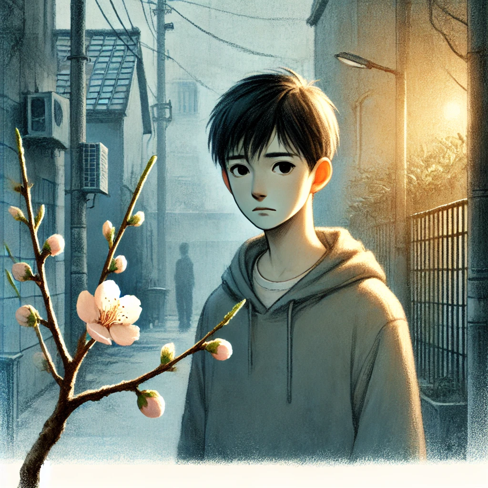

작가
손원평
출판일
2017년
감상평에 대한 AI그림
아몬드는 감정을 느끼지 못하는 윤재의 시선을 통해 공감과 이해의 의미를 다시 생각하게 만든다. 차별과 편견 속에서도 인간의 따뜻함이 중요함을 깨달았다. 공감의 의미를 다시 생각하게 만든 작품이었다.

감상평에 대한 AI평가
이 감상평은 다음의 요소들로 구성되어 있습니다.
✨주인공의 시각에 대한 설명: 주인공의 독특한 성격이나 시각이 어떻게 독자에게 중요한 주제를 전달하는지를 강조하고 있습니다.
✨주제에 대한 성찰: "차별과 편견 속에서도 인간의 따뜻함이 중요함을 깨달았다"는 부분은 작품의 핵심적인 메시지를 요약한 것입니다. 이는 작품이 전달하는 사회적, 감정적 주제에 대한 깊은 성찰을 나타냅니다.
✨작품이 준 감동과 영향: "공감의 의미를 다시 생각하게 만든 작품이었다"는 마지막 문장은 이 작품이 감상자에게 어떤 영향을 미쳤는지를 간결하게 전달합니다. 작품을 통해 공감의 본질과 의미를 되새기게 되었음을 표현하고 있습니다.